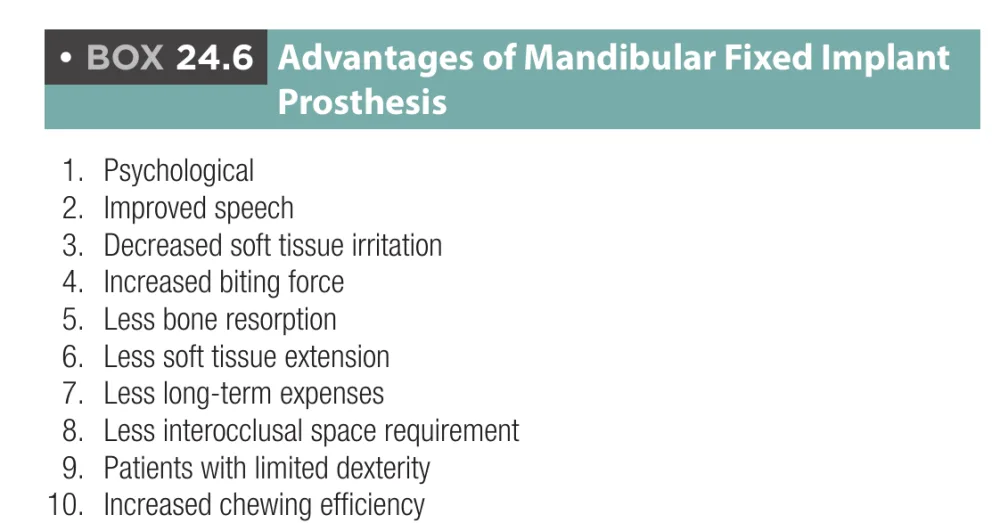
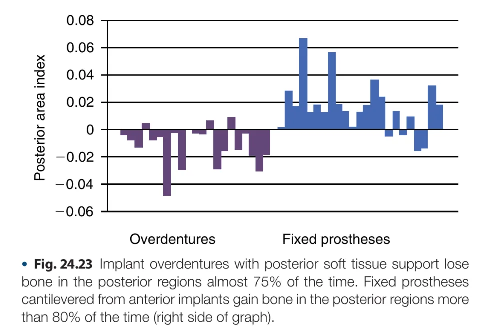

نسخه استخراجشده؛ ترجمه یا تأیید علمی انجام نشده است. وضعیت: captured
پیش از هر فهرست، یک تشبیه آموزشی داریم که برای آموزش بیمار ساخته شده است — و آن را باید دانست چون در هر مشاورهای به کار میآید:
تشبیه صندلی: «OD-1 مانند یک صندلی دوپایه است — پشتیبانی عمودی میدهد ولی میتواند جلو و عقب برود. OD-2 با سه ایمپلنت مانند صندلی سهپایه است — پشتیبانی بیشتری میدهد ولی زیر نیروهای جانبی به یک سو میچرخد. صندلی چهارپایه بیشترین پشتیبانی را میدهد و شبیه OD-3 و OD-4 است که پروتزهای پایدار و دارای گیرند.»
حالا پرسش این درس: چرا اصلاً به سراغ پروتز ثابت برویم؟ پروتز ثابت ایمپلنتی مندیبل ده مزیت دارد. چهار تای اول:
۱ — روانشناختی.
پروتز ثابت این مزیت روانی را دارد که مانند دندان طبیعی عمل میکند و حس میشود، در حالی که اوردنچر — حتی اگر کاملاً ایمپلنتساپورت باشد — یک پروتز متحرک باقی میماند. و امروزه بیشتر بیماران نمیخواهند پروتزشان درآوردنی باشد.
و یک قاعدهی تصمیمگیری صریح: «پروتز ثابت اغلب بهعنوان بخشی واقعی از بدن بیمار ادراک میشود، و اگر خواستهی اصلی بیمار این باشد که پروتز را در نیاورد، اوردنچر ایمپلنتساپورت نیاز روانی این بیمار را برآورده نخواهد کرد.» — یعنی این یک ترجیح سلیقهای نیست؛ یک اندیکاسیون است.
۲ — گفتار بهتر.
دنچر کامل مندیبل — و تا حدی اوردنچرها — اغلب حین حرکات فک در عملکرد و گفتار جابهجا میشوند.
و سازوکارش دقیقاً این است: انقباض عضلات منتالیس، بوکسیناتور یا مایلوهایوئید میتواند پروتز را از روی بافت نرم بلند کند. در نتیجه دندانها ممکن است حین صحبت به هم بخورند و صدای کلیک بدهند.
و یک پیامد ظریف که اغلب دیده نمیشود: با پروتز ثابت، زبان و عضلات پریاورال میتوانند موقعیت طبیعیتری بگیرند — چون دیگر لازم نیست کارِ محدود کردن حرکت دنچر را انجام دهند. یعنی پروتز ثابت یک وظیفه را از دوش عضله برمیدارد.
۳ — تحریک کمتر بافت نرم.
ساییدگی بافت نرم و تحلیل تسریعشدهی استخوان، بیشتر نشانهی حرکت افقی پروتز زیر نیروهای جانبیاند.
و عددی که مقیاس مسئله را نشان میدهد: «یک دنچر مندیبل ممکن است حین عملکرد تا ۱۰ میلیمتر حرکت کند.» در چنین شرایطی، تماسهای اکلوزالی مشخص و کنترل نیروهای جونده تقریباً ناممکن است.
اوردنچر ایمپلنتساپورت حرکات جانبی را محدود میکند و نیروها را طولیتر میکند — اما پروتز ثابت ایمپلنت، پایداری ایدهآل میدهد و بیمار میتواند بهطور مداوم یک اکلوژن سنتریک معین را بازتولید کند.
و یک اندیکاسیون ویژه: پروتز ثابت بهویژه در بیماران با زروستومی (خشکی دهان) سودمند است، چون هیچ تماس بافتی وجود ندارد و تحریک احتمالی بافت نرم به حداقل میرسد.
۴ — نیروی گاز بیشتر.
عدد کلیدی: «حداکثر نیروی اکلوزالی بیمار دارای دنچر ممکن است با یک پروتز ایمپلنتساپورت ۳۰۰ درصد بهبود یابد.»
و شاهدی که علت را نشان میدهد: در یک مطالعه، با برداشتن بار (bar) متصلکنندهی ایمپلنتها نیروی اکلوزالی کاهش یافت و آن را به از دست رفتن پشتیبانی، پایداری و گیر نسبت دادند.
و یک مطالعهی مقطعی چندمرکزی ضخامت بیشتر ماستر، کارایی جویدن بالاتر و نیروی گاز بیشتر را در بیماران بیدندان با پروتز ثابت ایمپلنتساپورت گزارش کرد.

۵ — تحلیل کمتر استخوان. و این مزیتی است که بیشترین دادهی عددی را پشت خود دارد.
نخست، مقیاس مسئله: مطالعات تأیید کردهاند که پس از کشیدن دندانهای مندیبل، بهطور میانگین ۴ میلیمتر تحلیل عمودی استخوان در سال اول رخ میدهد. و این تحلیل بهطور نامحدود ادامه مییابد.
و یک مقایسهی دو قوس که باید حفظ باشی: «مندیبل چهار برابر ماگزیلا تحلیل عمودی استخوان را تجربه میکند.» — یعنی بیدندانی در مندیبل هزینهی ساختاری بسیار بیشتری دارد.
در برابر آن، زیرِ اوردنچر: استخوان ممکن است تنها ۰٫۶ میلیمتر در طول ۵ سال بهصورت عمودی تحلیل برود، و تحلیل درازمدت ممکن است زیر ۰٫۰۵ میلیمتر در سال بماند.
اما پرسش اصلی این است: ثابت در برابر متحرک، در ناحیهی خلفی چه میکند؟
یک مطالعهی بالینی تازهتر تحلیل استخوان خلفی مندیبل را در اوردنچرهای ایمپلنتی (RP-5) با پروتزهای ثابت کانتیلوردار از ایمپلنتهای قدامی مقایسه کرد:
و شکل ۲۴٫۲۳ همین را به درصد بیان میکند: اوردنچرهای ایمپلنتی با پشتیبانی بافت نرم خلفی، تقریباً ۷۵ درصد مواقع در نواحی خلفی استخوان از دست میدهند؛ پروتزهای ثابتِ کانتیلورشده از ایمپلنتهای قدامی، بیش از ۸۰ درصد مواقع در نواحی خلفی استخوان بهدست میآورند.
و تأیید دوم — مطالعهای دیگر: ۶۰ بیمار پیاپی با پروتز ثابت کانتیلوردار روی پنج تا شش ایمپلنت میان فورامنها. ارتفاع بدنهی مندیبل در فواصل ۵، ۱۰، ۱۵ و ۲۰ میلیمتری دیستالِ آخرین ایمپلنت اندازهگیری شد. اندازههای پایه تا ۴ سال پس از عملکرد از ۷٫۲۵ ± ۰٫۲۵ به ۸٫۱۸ ± ۰٫۱۸ میلیمتر افزایش یافت.
و یک نکتهی زمانی مهم: «تقریباً تمام رشد استخوان در سال اول عملکرد رخ داد.» — یعنی پاسخ استخوان به بارگذاری، سریع است نه تدریجی.
و یک نکته دربارهی اعداد گروه ثابت: در گروه ثابت، بازهی شاخص ۰٫۰۷+ تا ۰٫۰۱۵+ گزارش شده. توجه کن که حد پایین بازه بزرگتر از حد بالای آن نوشته شده؛ ولی آنچه اهمیت دارد این است که هر دو عدد مثبتاند، و همین علامت مثبت است که پیام را میرساند: در گروه ثابت، تغییر سطح استخوان در جهت افزایش بود، در حالی که ۱۴ از ۲۰ بیمار گروه RP-5 استخوان از دست دادند.
و چرا این اهمیت بالینی جدی دارد؟ پاسخ روشن است: مزیت مهم یک پروتز کاملاً ایمپلنتساپورت، حفظ و بازسازی احتمالی استخوان خلفی مندیبل است. و این بهویژه مهم است چون تحلیل استخوان خلفی در این ناحیه میتواند به تغییرات نوروسنسوری و حتی شکستگی بدنهی مندیبل بینجامد.
